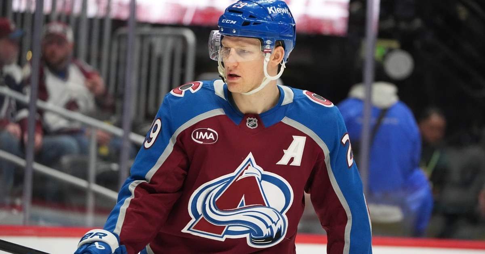

MacKinnon's injury is much worse than first thought — out 12 weeks, and the Winter Classic is gone
The Avalanche thought they were losing their best player for a month. After a specialist visit, the timeline tripled — and Nathan MacKinnon will now miss the Winter Classic and the rest of 2026.

Disclosure: this post contains affiliate links. I earn a commission on qualifying purchases.
The new timeline
Nathan MacKinnon is out approximately 12 weeks.
Avalanche head coach Jared Bednar gave the update on Saturday, November 21, after practice, and it was nothing like the news Colorado was hoping for. MacKinnon saw a specialist after the team returned home, and the re-evaluation changed everything. What was first called at least a month is now three times that long, keeping the Avalanche's leading scorer out through December and January, with a return sometime in February.
Bednar said he expects MacKinnon to make a full recovery and does not anticipate the injury becoming a recurring issue. That is the one piece of good news in an update that otherwise lands like a gut punch.
How it happened
The injury came on November 12 against the Ottawa Senators. MacKinnon took a cross-check from Senators defenseman Artem Zub in the second period, went down grabbing his side, and left the game. He did not return.
At the time, the hope was a month. MacKinnon had played 20 games and still leads Colorado in scoring with 30 points — 10 goals and 20 assists — despite missing the last three. He is 31, a former Hart Trophy winner, and the engine of everything the Avalanche do offensively. Losing him for a month was already a problem. Losing him for the rest of the calendar year is a different season entirely.
The Winter Classic is off the table
The most visible casualty of the new timeline is the Winter Classic. Colorado plays the Utah Mammoth outdoors on December 31 at Rice-Eccles Stadium in Salt Lake City, the kind of showcase game built around stars — and the Avalanche will play it without theirs.
It is not just one game, either. Colorado does not play again until November 25, when Montreal comes to town, and the schedule from here is a long stretch of hockey without the player who drives the top line, the top power play, and most nights the outcome.
What it means for Colorado
The Avalanche have held up so far. They are 13-7-3 and third in the Central Division, and they have gone 2-1 since MacKinnon and Cale Makar went down in the same game against Ottawa. Makar, the top defenseman, was also hurt that night and is expected to be out about two weeks, until around Thanksgiving — a much shorter absence, and one the team can plan around.
MacKinnon is the harder one to plan around. There is no replacement for a point-a-game center who leads the team in scoring and plays in every situation. The Avalanche have depth, and the last three games showed they can win without him. But three games is not three months. The test now is whether a team built around its two stars can stay in the race while one of them watches from the press box until February.
He will be back. Bednar made that clear. The question is what the standings look like when he gets there.
Gear up: Fanatics